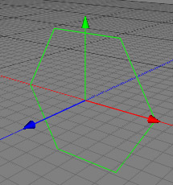

The n-Edge is a parametric spline object which gives you a regular n-Gon. It can be used for many technical constructions or as a starting point for more advanced splines.

Properties
Radius: Specifies the radius of the n-Edge.
Edges: Specifies the number of edges of the spline.
Orientation: Defines the axis to which the spline is perpendicular.